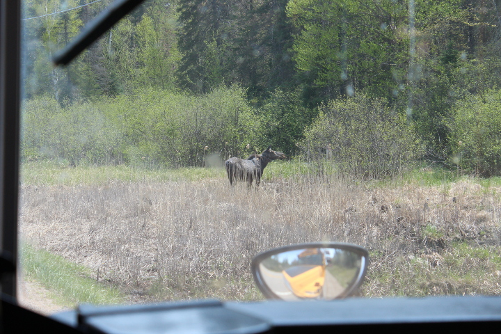
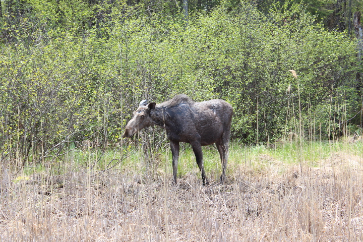
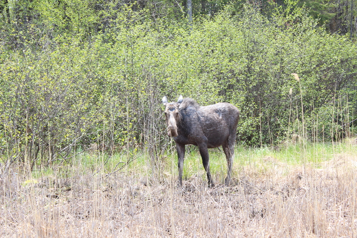
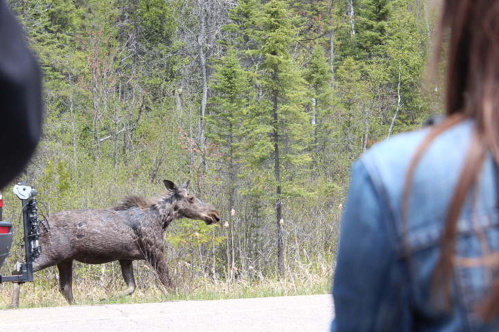
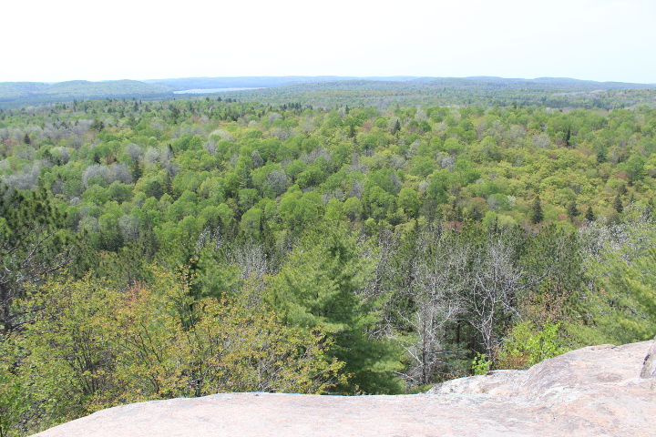

ムースを見よう！日帰りバスツアーでアルゴンキン州立公園へ
去年の今頃のこと。Toronto Adventures が主催する日帰りバスツアーに参加してきた。
このツアーの目的は野生動物のムース。日本語ではヘラジカ。トロントからアルゴンキンまでバスで行き、この時期ハイウエイ沿い頻繁に現れるムースをみよう、というツアーなのだ。
もともとGROUPONをチェックしてて偶然見つけたツアーで、費用は週末価格でひとり100ドルがGROUPONで77ドルだった。
カナダ観光局によると、7,725km²の広さを誇るアルゴンキン州立公園に３３００頭生息するといわれるムース。果たしてこのツアーで本当にムースは見られるのか？
日曜の朝、まだ地下鉄が走っていないのでＴＴＣのバスにて、アルゴンキン州立公園へ向かうバスの集合場所であるYork Mills駅へ向かう。そこで待っていたのは黄色のスクールバスだった。トロントからアルゴンキン州立公園までは車で北東へ３時間くらいの距離。このスクールバスで長距離移動は大丈夫なのかという不安がよぎる。
York Mills駅を出発したバスは、途中アルゴンキン州立公園の手前のティムホートンに寄りちょっと休憩。
その後アルゴンキンに到着してからはバスは速度をぐっと落とし、ハイウエイ６０沿いをのろのろ運転しながらムースを探す。
ところが、バスの運転手さんは目を皿のようにして一生懸命さがしてくれているのだけれど、なかなか現れないムース。スクールバスの硬いシートの上ですでに４時間以上を過ごしている。お尻が痛くて座っているのが苦痛になっている。もうこの日は現れないかも、としびれをきらしたところで、とうとうムースに遭遇！

バスから降りてムースをじーっくり眺める。この日会えたのはメスのムース。お腹が大きいのでどうやら妊娠しているようだ、と誰かが言っていた。
カナダでは冬、積雪に備えて道路に塩をまくのだが、春になって雪が溶けた後、残った塩を舐めにくるのだそう。

念願のムースを近くでみることができて感激。ムースはすごく大きく迫力があった。

人間達にじっと見つめられて居心地悪くなったのか、道路をのっそりと横断して森の中へ消えていった。


ムースを見た後は森の中をトレッキング。自然に癒される。急な坂道を息をこらしながら登った後には絶景が広がっていた。うっすらと汗をかいた額にそよ風が心地良い。素晴らしい眺めとともに持参した遅めのランチを楽しんだ。ああ、お尻は痛いけど来てよかったと実感しながら。